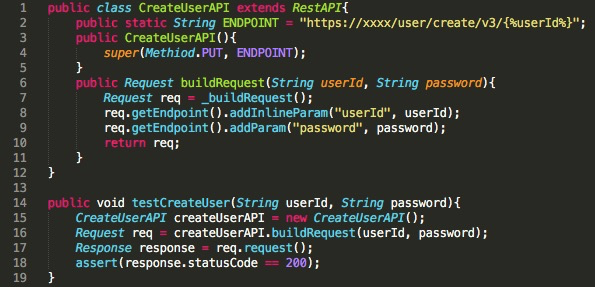
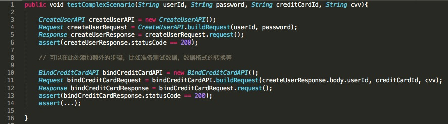

- 00 开篇词 从“小工”到“专家”，我的软件测试修炼之道.md.html
- 01 你真的懂测试吗？从“用户登录”测试谈起.md.html
- 02 如何设计一个“好的”测试用例？.md.html
- 03 什么是单元测试？如何做好单元测试？.md.html
- 04 为什么要做自动化测试？什么样的项目适合做自动化测试？.md.html
- 05 你知道软件开发各阶段都有哪些自动化测试技术吗？.md.html
- 06 你真的懂测试覆盖率吗？.md.html
- 07 如何高效填写软件缺陷报告？.md.html
- 08 以终为始，如何才能做好测试计划？.md.html
- 09 软件测试工程师的核心竞争力是什么？.md.html
- 10 软件测试工程师需要掌握的非测试知识有哪些？.md.html
- 11 互联网产品的测试策略应该如何设计？.md.html
- 12 从0到1：你的第一个GUI自动化测试.md.html
- 13 效率为王：脚本与数据的解耦 + Page Object模型.md.html
- 14 更接近业务的抽象：让自动化测试脚本更好地描述业务.md.html
- 15 过不了的坎：聊聊GUI自动化过程中的测试数据.md.html
- 16 脑洞大开：GUI测试还能这么玩（Page Code Gen + Data Gen + Headless）？.md.html
- 17 精益求精：聊聊提高GUI测试稳定性的关键技术.md.html
- 18 眼前一亮：带你玩转GUI自动化的测试报告.md.html
- 19 真实的战场：如何在大型项目中设计GUI自动化测试策略.md.html
- 20 与时俱进：浅谈移动应用测试方法与思路.md.html
- 21 移动测试神器：带你玩转Appium.md.html
- 22 从0到1：API测试怎么做？常用API测试工具简介.md.html
- 23 知其然知其所以然：聊聊API自动化测试框架的前世今生.md.html
- 24 紧跟时代步伐：微服务模式下API测试要怎么做？.md.html
- 25 不破不立：掌握代码级测试的基本理念与方法.md.html
- 26 深入浅出之静态测试方法.md.html
- 27 深入浅出之动态测试方法.md.html
- 28 带你一起解读不同视角的软件性能与性能指标.md.html
- 29 聊聊性能测试的基本方法与应用领域.md.html
- 30 工欲善其事必先利其器：后端性能测试工具原理与行业常用工具简介.md.html
- 31 工欲善其事必先利其器：前端性能测试工具原理与行业常用工具简介.md.html
- 32 无实例无真相：基于LoadRunner实现企业级服务器端性能测试的实践（上）.md.html
- 33 无实例无真相：基于LoadRunner实现企业级服务器端性能测试的实践（下）.md.html
- 34 站在巨人的肩膀：企业级实际性能测试案例与经验分享.md.html
- 35 如何准备测试数据？.md.html
- 36 浅谈测试数据的痛点.md.html
- 37 测试数据的“银弹”- 统一测试数据平台（上）.md.html
- 38 测试数据的“银弹”- 统一测试数据平台（下）.md.html
- 39 从小作坊到工厂：什么是Selenium Grid？如何搭建Selenium Grid？.md.html
- 40 从小工到专家：聊聊测试执行环境的架构设计（上）.md.html
- 41 从小工到专家：聊聊测试执行环境的架构设计（下）.md.html
- 42 实战：大型全球化电商的测试基础架构设计.md.html
- 43 发挥人的潜能：探索式测试.md.html
- 44 测试先行：测试驱动开发(TDD).md.html
- 45 打蛇打七寸：精准测试.md.html
- 46 安全第一：渗透测试.md.html
- 47 用机器设计测试用例：基于模型的测试.md.html
- 48 优秀的测试工程师为什么要懂大型网站的架构设计？.md.html
- 49 深入浅出网站高性能架构设计.md.html
- 50 深入浅出网站高可用架构设计.md.html
- 51 深入浅出网站伸缩性架构设计.md.html
- 52 深入浅出网站可扩展性架构设计.md.html
- 测试专栏特别放送 浅谈全链路压测.md.html
- 测试专栏特别放送 答疑解惑第一期.md.html
- 测试专栏特别放送 答疑解惑第七期.md.html
- 测试专栏特别放送 答疑解惑第三期.md.html
- 测试专栏特别放送 答疑解惑第二期.md.html
- 测试专栏特别放送 答疑解惑第五期.md.html
- 测试专栏特别放送 答疑解惑第六期.md.html
- 测试专栏特别放送 答疑解惑第四期.md.html
- 结束语 不是结束，而是开始.md.html
- 捐赠
23 知其然知其所以然：聊聊API自动化测试框架的前世今生
你好，我是茹炳晟，今天我和你分享的主题是“知其然知其所以然：聊聊API自动化测试框架的前世今生”。
在上一篇文章中，我以一个简单的Restful API为例，分别介绍了cURL和Postman的使用方法，相信你已经对API测试有个感性认识了。
但是，我们不能仅仅停留在感性认识的层面，还需要熟悉并掌握这些测试方法，完成相应的API测试工作。所以，也就有了我今天分享的主题，希望可以通过对API自动化测试框架发展的介绍，让你理解API测试是如何一步一步地发展成今天的样子，以“知其所以然”的方式加深你对API自动化测试的理解。
接下来，我将会遵循由简入繁的原则，为你介绍API测试框架，以发现问题然后解决问题的思路为主线，展开今天的分享。
早期的基于Postman的API测试
早期的API测试，往往都是通过类似Postman的工具完成的。但是，由于这类工具都是基于界面操作的，所以有以下两个问题亟待解决：
当需要频繁执行大量的测试用例时，基于界面的API测试就显得有些笨拙；
基于界面操作的测试难以与CI/CD流水线集成。
所以，我们迫切需要一套可以基于命令行执行的API测试方案。这样，API测试可以直接通过命令行发起，与CI/CD流水线的整合也就方便得多了。
基于Postman和Newman的API测试
于是就出现了集成Postman和Newman的方案，然后再结合Jenkins就可以很方便地实现API测试与CI/CDl流水线的集成。Newman其实就是一个命令行工具，可以直接执行Postman导出的测试用例。
用Postman开发调试测试用例，完成后通过Newman执行，这个方案看似很完美。但是在实际工程实践中，测试场景除了简单调用单个API以外，还存在连续调用多个API的情况。
此时，往往会涉及到多个API调用时的数据传递问题，即下一个API调用的参数可能是上一个API调用返回结果中的某个值。另外，还会经常遇到的情况是，API调用前需要先执行一些特定的操作，比如准备测试数据等。
因此，对于需要连续调用多个API并且有参数传递的情况，Postman+Newman似乎就不再是理想的测试方案了。
基于代码的API测试
为了解决这个问题，于是就出现了基于代码的API测试框架。比较典型的是，基于Java的OkHttP和Unirest、基于Python的http.client和Requests、基于NodeJS的Native和Request等。
小型的互联网企业，往往会根据自己的业务需求，选用这些成熟的API测试框架。
但是，对于中大型的互联网企业，一般都会自己开发更适合自身业务上下文的API测试框架，比如eBay，我们为了实现代码化的API测试，开发了自己的HttpClient，后期为了使API测试的代码更简洁易懂，就基于Rest-Assured封装了全新的API测试框架。
这种根据公司业务上下文开发实现的API测试框架，在使用上有很多优点，而且灵活性也很好，主要体现在以下几个方面：
可以灵活支持多个API的顺序调用，方便数据在多个API之间传递，即上一个API调用返回结果中的某个字段值可以作为后续API调用的输入参数；
方便在API调用之前或者之后执行额外的任意操作，可以在调用前执行数据准备操作，可以在调用后执行现场清理工作等；
可以很方便地支持数据驱动测试，这里的数据驱动测试概念和GUI测试中的数据驱动测试完全相同，也就是可以将测试数据和测试代码分离解耦；
由于直接采用了代码实现，所以可以更灵活地处理测试验证的断言（Assert）；
原生支持命令行的测试执行方式，可以方便地和CI/CD工具做集成。
这里我给出了一段伪代码示例，用于展示如何用代码实现一个简单的API测试。

图1 基于代码的API测试的伪代码示例
代码的第1-12行，创建了CreateUserAPI类，其中包含了endpoint、操作方法PUT、InlineParam和Param的设置，并且构建了对应的request对象；
代码的第14-19行，是测试的主体函数。这段函数的逻辑是这样的：
- 首先，构建CreateUserAPI的对象；
- 然后，用CreateUserAPI对象的buildRequest方法结合输入参数构建request对象；
- 接着，通过request对象的request()方法发起了API调用；
- 最后，验证response中的状态码是不是200。
在这段伪代码中，有以下几点需要你特别注意：
代码中“CreateUserAPI的父类RestAPI”“_buildRequest()方法”“request()方法”“addInlineParam()方法”等，都是由API测试框架提供的。
为了简化代码，这里并没有引入数据驱动的data provider。但在实际项目中，代码第14行的测试输入参数，往往来自于data provider，即由数据驱动的方式提供测试输入数据。
由于测试过程完全由代码实现，所以可以很方便的在测试执行前后增加任意的额外步骤。比如，需要在CreateUser前增加数据创建的步骤时，只需要在代码第15行前直接添加就可以了。
这里的例子只有一个API调用，当需要多个API顺序调用时，直接扩展testCreateUser方法即可，两个API之间的数据传递可以通过上一个API返回的response.XXXX完成。
通过这段伪代码，我们可以看到，虽然基于代码的API测试灵活性很好，也可以很方便地和CI/CD集成，但是也引入了一些新的问题，比如：
- 对于单个API测试的场景，工作量相比Postman要大得多；
- 对于单个API测试的场景，无法直接重用Postman里面已经积累的Collection。
在实际工程中，这两个问题非常重要，而且必须要解决。因为公司管理层肯定无法接受相同工作的工作量直线上升，同时原本已经完成的部分无法继续使用，所以自动化生成API测试代码的技术也就应运而生了。
自动生成API测试代码
自动生成API测试代码是指，基于Postman的Collection生成基于代码的API测试用例。
其实，在上一篇文章《从0到1：API测试怎么做？常用API测试工具简介》最后的部分，我已经提到过Postman工具本身已经支持将Collection转化成测试代码，但如果直接使用这个功能的话，还有两个问题需要解决：
测试中的断言（assert）部分不会生成代码，也就是说测试代码的生成只支持发起request的部分，而不会自动生成测试验证点的代码；
很多中大型互联网企业都是使用自己开发的API测试框架，那么测试代码的实现就会和自研API测试框架绑定在一起，显然Postman并不支持这类代码的自动生成。
鉴于以上两点，理想的做法是自己实现一个代码生成工具，这个工具的输入是Postman中Collection的JSON文件，输出是基于自研API框架的测试代码，而且同时会把测试的断言一并转化为代码。
这个小工具实现起来并不复杂，其本质就是解析Collection JSON文件的各个部分，然后根据自研API框架的代码模板实现变量替换。 具体来讲，实现过程大致可以分为以下三步：
- 首先，根据自研API框架的代码结构建立一个带有变量占位符的模板文件；
- 然后，通过JSON解析程序，按照Collection JSON文件的格式定义去提取header、method等信息；
- 最后，用提取得到的具体值替换之前模板文件中的变量占位符，这样就得到了可执行的自研框架的API测试用例代码。
有了这个工具后，我建议你的工作模式（Working Model）可以转换成这样：
- 对于Postman中已经累积的Collection，全部由这个工具统一转换成基于代码的API测试用例；
- 开发人员继续使用Postman执行基本的测试，并将所有测试用例保存成Collection，后续统一由工具转换成基于代码的API测试用例；
- 对于复杂测试场景（比如，顺序调用多个API的测试），可以组装由工具转换得到的API测试用例代码，完成测试工作。
如图2所示，就是一个组装多个由工具转换得到的API测试用例代码的例子。其中，代码第3行的类“CreateUserAPI”和第10行的类“BindCreditCardAPI”的具体代码就可以通过工具转换得到。

图2 多个API顺序调用的测试用例代码
至此，基于代码的API测试发展得算是比较成熟了，但在实际应用过程中还有一个痛点一直未被解决，那就是测试验证中的断言，也是我接下来要和你一起讨论的话题。
Response结果发生变化时的自动识别
在实际的工程项目中，开发了大量的基于代码的API测试用例后，你会发现一个让人很纠结的问题：到底应该验证API返回结果中的哪些字段？
因为你不可能对返回结果中的每一个字段都写assert，通常情况下，你只会针对关注的几个字段写assert，而那些没写assert的字段也就无法被关注了。
但对API测试来说，有一个很重要的概念是后向兼容性（backward compatibility）。API的后向兼容性是指，发布的新API版本应该能够兼容老版本的API。
后向兼容性除了要求API的调用参数不能发生变化外，还要求不能删减或者修改返回的response中的字段。因为这些返回的response会被下游的代码使用，如果字段被删减、改名或者字段值发生了非预期的变化，那么下游的代码就可能因为无法找到原本的字段，或者因为字段值的变化而发生问题，从而破坏API的后向兼容性。
所以，我们迫切需要找到一个方法，既可以不对所有的response字段都去写assert，又可以监测到response的结构以及没有写assert的字段值的变化。
在这样的背景下，诞生了“Response结果变化时的自动识别”技术。也就是说，即使我们没有针对每个response字段都去写assert，我们仍然可以识别出哪些response字段发生了变化。
具体实现的思路是，在API测试框架里引入一个内建数据库，推荐采用非关系型数据库（比如MongoDB），然后用这个数据库记录每次调用的request和response的组合，当下次发送相同request时，API测试框架就会自动和上次的response做差异检测，对于有变化的字段给出告警。
你可能会说这种做法也有问题，因为有些字段的值每次API调用都是不同的，比如token值、session ID、时间戳等，这样每次的调用就都会有告警。
但是这个问题很好解决，现在的解决办法是通过规则配置设立一个“白名单列表”，把那些动态值的字段排除在外。
总结
为了让你可以更好地理解今天的API测试框架，我从其发展历程的角度进行了分析：
早期的基于Postman的API测试在面临频繁执行大量测试用例，以及与CI/CD流水线整合的问题时，显得心有余而力不足。为此，基于命令行的API测试实践，也就是Postman+Newman，具有很好的灵活性，解决了这两个问题。
但是，Postman+Newman的测试方案，只能适用于单个API调用的简单测试场景，对于连续调用多个API并涉及到参数传递问题时，这个方案就变得不那么理想和完美了。随后，API测试就过渡到了基于代码的API测试阶段。
一些小型企业，则往往会选择适合自己业务的成熟API测试框架。中大型的互联网企业，一般都会根据自己的业务上下文，在成熟API测试框架的基础上封装自己的API测试框架，提升测试效率和灵活性。
但是，不管是采用现成的还是自己去开发API测试框架，都会遇到测试用例开发效率低下，以及无法直接重用Postman中积累的Collection的问题，为此我分享了两个比较好用的方法，也就是：自动生成API测试代码和Response结果变化的自动识别，并给出了这两个方法的实现思路。
希望我分享的这些内容，可以帮你解决在实际测试项目中遇到的问题。
思考题
目前，基于代码的API测试框架已经比较成熟了，所以在此基础上又出现了基于配置文件的API测试框架，比如典型的HttpRunner，在此类API测试框架的支持下，测试用例本身往往就是纯粹的配置文件了。你是否有接触过这类API测试框架，对此又有什么看法呢？
欢迎你给我留言。
© 2019 - 2023 Liangliang Lee. Powered by gin and hexo-theme-book.